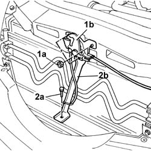
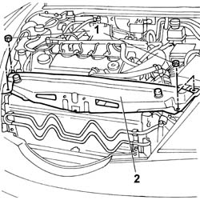
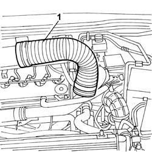
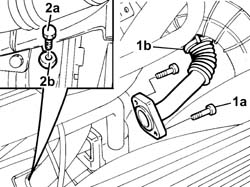
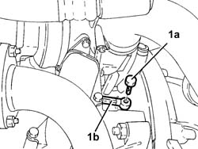

1084B40 Engine oil supply pipe to turbocharger
- Path
- Procedures > 10 ENGINE > 1084 ENGINE LUBRICATION > 1084B ENGINE OIL LUBRICATION CIRCUIT > 1084B40 Engine oil supply pipe to turbocharger
- Kind
- repair procedure (removal / refitting; the operation number is the code)
- Applies to
- engines: 2.4 JTD 10V; all production periods
- Interactive page
- https://sloeber94.github.io/elrnDB-lThss/en/#/105114
Applies to: engines: 2.4 JTD 10V; all production periods
 Removing
Removing
 Refitting
RefittingSee in Op. 1016A10 SOUND-PROOFING COVER - R.R.
1. Undo the fixing nuts (1a) and remove the bonnet lock (1b) from its housing in the crossmember.
2. Undo the lower unti (2a) and remove the lock reinforcement bracket (2b).

Applies to: engines: 2.4 JTD 10V; all production periods
1. Undo the fixing nuts.
2. Remove the upper front crossmember.

Applies to: engines: 2.4 JTD 10V; all production periods
1. Remove the cold air intake from the connector on the air filter.

Applies to: engines: 2.4 JTD 10V; all production periods
1. Undo the bolts (1a) fixing the EGR pipe (1b) to the exhaust manifold.
2. Undo the connector (2a) and disconnect the engine oil supply pipe (2b) from the turbocharger.

Applies to: engines: 2.4 JTD 10V; all production periods
- Raise the vehicle.
See in Op. 7055B54 PROTECTION/GUARD under engine - R.R.
1. Undo the connector (1a) from the retainer on the crankcase and remove the turbocharger engine oil supply pipe (1b).

Applies to: engines: 2.4 JTD 10V; all production periods
Refitting
Removing- Fit the turbocharger engine oil supply pipe and secure it to the crankcase using the connector.
- Lower the vehicle.
See in Op. 7055B54 PROTECTION/GUARD under engine - R.R.
- Connect the turbocharger engine oil supply pipe and secure it with the connector tightened to torque.
- Tighten the bolts fixing the EGR pipe to the exhaust manifold.
- Fit the cold air intake to the connector on the air filter.
- Fit the upper front crossmember and tighten the fixing nuts to torque.
 | Value - daNm | Fastening | Component | Ø |
|---|---|---|---|---|
. | 0.6 | Bolts | FRONT WING CROSSMEMBER HEADLAMP HOUSINGS | M6 |
- Fit the bonnet lid lock complete with bracket and tighten the nuts fixing it to the upper crossmember and to the lower crossmember.
See in Op. 1016A10 SOUND-PROOFING COVER - R.R.
See in Op. 0010T11 ENGINE OIL - Check level and top up if necessary
- link 0010T11 missing